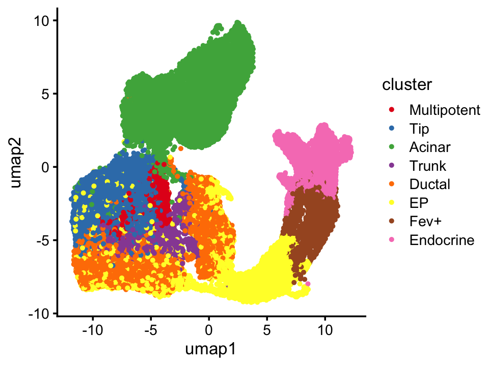
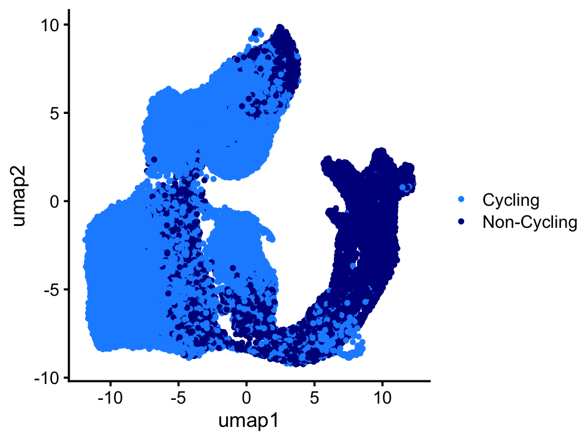
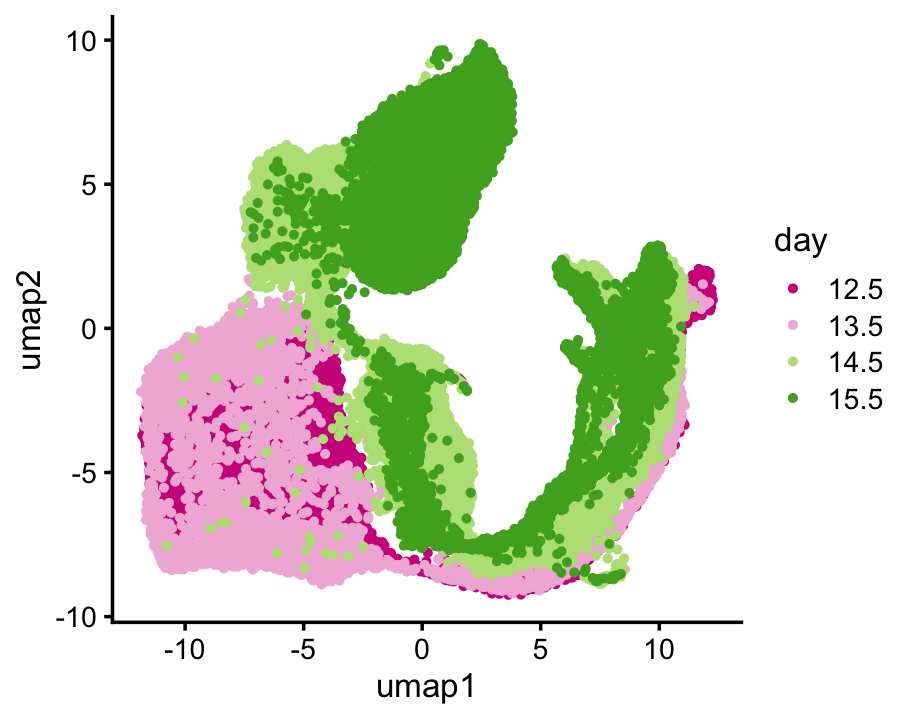

Last updated: 2025-01-09
Checks: 7 0
Knit directory:
single-cell-jamboree/analysis/
This reproducible R Markdown analysis was created with workflowr (version 1.7.1). The Checks tab describes the reproducibility checks that were applied when the results were created. The Past versions tab lists the development history.
Great! Since the R Markdown file has been committed to the Git repository, you know the exact version of the code that produced these results.
Great job! The global environment was empty. Objects defined in the global environment can affect the analysis in your R Markdown file in unknown ways. For reproduciblity it’s best to always run the code in an empty environment.
The command set.seed(1) was run prior to running the
code in the R Markdown file. Setting a seed ensures that any results
that rely on randomness, e.g. subsampling or permutations, are
reproducible.
Great job! Recording the operating system, R version, and package versions is critical for reproducibility.
Nice! There were no cached chunks for this analysis, so you can be confident that you successfully produced the results during this run.
Great job! Using relative paths to the files within your workflowr project makes it easier to run your code on other machines.
Great! You are using Git for version control. Tracking code development and connecting the code version to the results is critical for reproducibility.
The results in this page were generated with repository version 38cba65. See the Past versions tab to see a history of the changes made to the R Markdown and HTML files.
Note that you need to be careful to ensure that all relevant files for
the analysis have been committed to Git prior to generating the results
(you can use wflow_publish or
wflow_git_commit). workflowr only checks the R Markdown
file, but you know if there are other scripts or data files that it
depends on. Below is the status of the Git repository when the results
were generated:
Untracked files:
Untracked: data/GSE132188_adata.h5ad.h5
Untracked: data/Immune_ALL_human.h5ad
Untracked: data/pancreas_endocrine.RData
Untracked: data/pancreas_endocrine_alldays.h5ad
Note that any generated files, e.g. HTML, png, CSS, etc., are not included in this status report because it is ok for generated content to have uncommitted changes.
These are the previous versions of the repository in which changes were
made to the R Markdown (analysis/pancreas_endocrine.Rmd)
and HTML (docs/pancreas_endocrine.html) files. If you’ve
configured a remote Git repository (see ?wflow_git_remote),
click on the hyperlinks in the table below to view the files as they
were in that past version.
| File | Version | Author | Date | Message |
|---|---|---|---|---|
| Rmd | 38cba65 | Peter Carbonetto | 2025-01-09 | wflow_publish("pancreas_endocrine.Rmd", verbose = TRUE, view = FALSE) |
| html | 8a7e118 | Peter Carbonetto | 2025-01-09 | Added some umap plots to the pancreas_endocrine analysis. |
| Rmd | f5bb283 | Peter Carbonetto | 2025-01-09 | wflow_publish("pancreas_endocrine.Rmd", verbose = TRUE, view = FALSE) |
| Rmd | 9badd16 | Peter Carbonetto | 2025-01-09 | Made a few improvements to the pancreas_endocrine analysis. |
| html | 19b7131 | Peter Carbonetto | 2025-01-09 | First build of the pancreas_endocrine analysis. |
| Rmd | 0aad00e | Peter Carbonetto | 2025-01-09 | workflowr::wflow_publish("pancreas_endocrine.Rmd", verbose = TRUE) |
| Rmd | f900873 | Peter Carbonetto | 2025-01-09 | workflowr::wflow_publish("index.Rmd") |
The aim of this analysis is to take an initial look at the mouse pancreas endocrinogenesis data from Bastidas-Ponce et al 2019 (see also this GitHub repository) and that was later analyzed in the scVelo paper.
To run the code, you will need to first download the “GSE132188_adata.h5ad.h5” file from the GEO website, accession GSE132188.
Then run the Python script
prepare_pancreas_endocrine_data.py to generate the file
“pancreas_endocrine_alldays.h5ad”.
First, load the packages needed for this analysis.
library(Matrix)
library(anndata)
library(reticulate)
library(tools)
library(ggplot2)
library(cowplot)
Sys.getenv("RETICULATE_PYTHON")
# [1] "/Users/pcarbo/miniforge3/bin/python"Note: The AnnData Python package is needed to run this code. I installed anndata 0.11.2 using conda.
Get the count data that was prepared using the Python script.
dat1 <- read_h5ad("../data/pancreas_endocrine_alldays.h5ad")
counts <- dat1$X
counts <- as(counts,"CsparseMatrix")Get the meta-data downloaded from GEO.
dat2 <- read_h5ad("../data/GSE132188_adata.h5ad.h5")Align the two data sets.
ids1 <- rownames(dat1$obs)
ids2 <- rownames(dat2$obs)
ids2 <- paste0("e",10*as.numeric(as.character(dat2$obs$day)),"-",ids2)
ids2 <- substr(ids2,1,23)
rows <- which(is.element(ids1,ids2))
ids1 <- ids1[rows]
counts <- counts[rows,]
obs1 <- dat1$obs[rows,]Check that the sample ids and genes are the same.
print(all(ids1 == ids2))
print(all(rownames(dat1$var) == rownames(dat2$var)))
# [1] TRUE
# [1] TRUEExtract the gene info.
gene_info <- dat2$var
gene_info <- cbind(gene = rownames(gene_info),gene_info)
rownames(gene_info) <- NULLExtract the sample info.
sample_info <- dat2$obs
umap <- dat2$obsm$X_umap
colnames(umap) <- c("umap1","umap2")
sample_info <- cbind(data.frame(id = ids1,stringsAsFactors = FALSE),
umap,
sample_info)
rownames(sample_info) <- NULLSave the data and t-SNE results to an .Rdata file for more convenient analysis in R:
save(list = c("gene_info","sample_info","counts"),
file = "pancreas_endocrine.RData")
resaveRdaFiles("pancreas_endocrine.RData")The meta-data includes a previously computed UMAP which we can use to visualize of the key structure in the data.
The Bastidas-Ponce et al paper identified 8 main cell types:
cluster_colors <- c("#e41a1c","#377eb8","#4daf4a","#984ea3","#ff7f00",
"#ffff33","#a65628","#f781bf")
ggplot(sample_info,
aes(x = umap1,y = umap2,color = clusters_fig2_final)) +
geom_point(size = 0.75) +
scale_color_manual(values = cluster_colors) +
labs(color = "cluster") +
theme_cowplot(font_size = 10)
| Version | Author | Date |
|---|---|---|
| 8a7e118 | Peter Carbonetto | 2025-01-09 |
Additionally, they distinguished proliferating vs. non-proliferating cells:
ggplot(sample_info,
aes(x = umap1,y = umap2,color = proliferation)) +
geom_point(size = 0.75) +
scale_color_manual(values = c("dodgerblue","darkblue")) +
labs(color = "") +
theme_cowplot(font_size = 10)
| Version | Author | Date |
|---|---|---|
| 8a7e118 | Peter Carbonetto | 2025-01-09 |
Beyond the main cell types and proliferating/non-profilerating, there appears to be additional structure in the data corresponding to the different lineages (days):
lineage_colors <- c("#d01c8b","#f1b6da","#b8e186","#4dac26")
ggplot(sample_info,
aes(x = umap1,y = umap2,color = day)) +
geom_point(size = 0.75) +
scale_color_manual(values = lineage_colors) +
theme_cowplot(font_size = 10)
| Version | Author | Date |
|---|---|---|
| 8a7e118 | Peter Carbonetto | 2025-01-09 |
Note that these UMAPs plots reproduce the plots in the original paper.
sessionInfo()
# R version 4.3.3 (2024-02-29)
# Platform: aarch64-apple-darwin20 (64-bit)
# Running under: macOS Sonoma 14.7.1
#
# Matrix products: default
# BLAS: /Library/Frameworks/R.framework/Versions/4.3-arm64/Resources/lib/libRblas.0.dylib
# LAPACK: /Library/Frameworks/R.framework/Versions/4.3-arm64/Resources/lib/libRlapack.dylib; LAPACK version 3.11.0
#
# locale:
# [1] en_US.UTF-8/en_US.UTF-8/en_US.UTF-8/C/en_US.UTF-8/en_US.UTF-8
#
# time zone: America/Chicago
# tzcode source: internal
#
# attached base packages:
# [1] tools stats graphics grDevices utils datasets methods
# [8] base
#
# other attached packages:
# [1] cowplot_1.1.3 ggplot2_3.5.0 reticulate_1.40.0 anndata_0.7.5.6
# [5] Matrix_1.6-5
#
# loaded via a namespace (and not attached):
# [1] sass_0.4.8 utf8_1.2.4 generics_0.1.3 stringi_1.8.3
# [5] lattice_0.22-5 digest_0.6.34 magrittr_2.0.3 evaluate_0.23
# [9] grid_4.3.3 fastmap_1.1.1 rprojroot_2.0.4 workflowr_1.7.1
# [13] jsonlite_1.8.8 whisker_0.4.1 promises_1.2.1 fansi_1.0.6
# [17] scales_1.3.0 jquerylib_0.1.4 cli_3.6.2 rlang_1.1.3
# [21] munsell_0.5.0 withr_3.0.0 cachem_1.0.8 yaml_2.3.8
# [25] dplyr_1.1.4 colorspace_2.1-0 httpuv_1.6.14 assertthat_0.2.1
# [29] vctrs_0.6.5 R6_2.5.1 png_0.1-8 lifecycle_1.0.4
# [33] git2r_0.33.0 stringr_1.5.1 fs_1.6.3 pkgconfig_2.0.3
# [37] pillar_1.9.0 bslib_0.6.1 later_1.3.2 gtable_0.3.4
# [41] glue_1.7.0 Rcpp_1.0.12 highr_0.10 xfun_0.42
# [45] tibble_3.2.1 tidyselect_1.2.1 knitr_1.45 farver_2.1.1
# [49] htmltools_0.5.7 rmarkdown_2.26 labeling_0.4.3 compiler_4.3.3